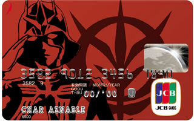
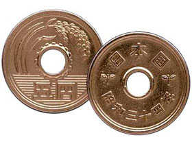

American Money Handling
In the United States, the credit card is king. Some establishments will try to disallow the use of credit cards for small purchases. Also, some smaller restaurants still operate as "cash only" -- be sure to ask before dining if you are out of cash. Be aware that many places will not accept hundred dollar bills and some, much fewer, will not accept fifty dollar bills.



Japanese Money Handling
Cash is still the preferred payment method. Big bills are readily used and accepted in Japan; you are unlikely to be frowned upon for using a 10,000 yen bill to pay even for low-cost items, although smaller denominations are appreciated for payments made in taxis, smaller shops, temples and shrines. The likelihood that credit cards are accepted decreases in small cities and towns, and thus it is advisable to keep cash at hand when visiting rural areas.